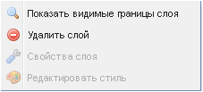
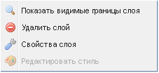

Контекстные меню слоев
Вложениями всех папок закладки Слои можно управлять с помощью контекстных меню, вызываемых нажатием правой кнопки мыши на названии слоя, картоосновы или стэка анимации.
Контекстное меню тематических слоев и редактируемых слоев имеет четыре команды. Команда Показать видимые границы слоя используется для отображения в рабочем окне карты всего слоя полностью, если в видимой области отражена только его часть. Команды контекстного меню Удалить слой, Свойства слоя и Редактировать стиль аналогичны кнопкам управления закладки Слои.
Контекстное меню картооснов и анимации имеет по две команды – Показать видимые границы слоя и Удалить слой.

Исключение составляет контекстное меню картооснов ЭКО 3.1 и ЭКО 3.1 бланк, которое дает возможность использовать команду – Свойства слоя.
